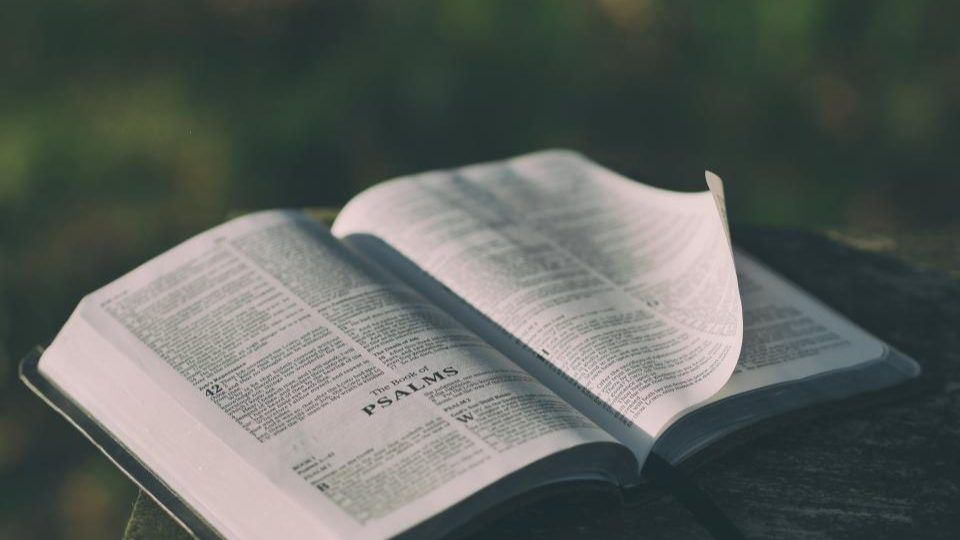

Kit 7 jours : dépasser les 72 heures sans surstockage
La stratégie de préparation de l’Union européenne, présentée en mars 2025, vise au moins 72 heures d’autonomie pour chaque citoyen. Viser 7 jours est possible sans accumuler : rotation des stocks, partage entre voisins, apprentissage des gestes de base. L’objectif est la résilience, pas l’amoncellement.

Ce que dit la stratégie européenne de mars 2025
Adoptée le 26 mars 2025, la stratégie de l’Union pour la préparation comprend 30 actions clés. Elle promeut un minimum de 72 heures d’autosuffisance pour la population en cas de crise. Les États membres sont invités à diffuser des lignes directrices pour constituer un kit d’urgence.
Cette stratégie ne fixe pas un objectif de 7 jours. Elle pose 72 heures comme base commune. Viser plus longtemps relève d’une démarche personnelle, à adapter à la composition du foyer et aux risques locaux.
Comment viser 7 jours sans stockage excessif
Rotation
- Consommez et remplacez les stocks régulièrement.
- Un stock qui tourne n’est pas un stock qui dort.
- Évitez les achats en masse que vous ne consommerez jamais.
Entraide
- Partagez les compétences avec les voisins.
- Un réseau local vaut mieux qu’un stock individuel démesuré.
- Organisez un point de rencontre de quartier.
Compétences
- Apprenez à purifier l’eau.
- Formez-vous aux premiers secours.
- Savoir faire réduit le besoin de matériel.
Les priorités au-delà de 72 heures
- Eau : 2 litres par personne et par jour pour boire, comme le guide officiel, plus de l’eau pour l’hygiène si vous avez la place. Pour 7 jours, cela représente 14 litres par personne pour boire.
- Alimentation : des aliments qui ne nécessitent pas de cuisson et que la famille mange habituellement.
- Chaleur et abri : couvertures, vêtements de rechange, protection contre le froid.
- Santé : traitement personnel pour 7 jours, trousse de secours, formation aux gestes qui sauvent.
- Information : radio à piles, piles de rechange, connaissance des numéros d’urgence.
Où en est l'Europe ?
En mars 2025, la Commission européenne a présenté sa Stratégie pour une Union de la préparation. Elle encourage chaque foyer à pouvoir faire face seul aux premières heures d'une crise et annonce des lignes directrices pour une autonomie minimale de 72 heures : eau, nourriture, information, éclairage. C'est une orientation européenne, pas une obligation pour les habitants.
La Commission poursuit ces travaux en 2026 (exigences minimales de préparation, lignes directrices sur les 72 heures). Le 30 octobre 2026, elle a annoncé la création du groupe consultatif PreparEU, consacré à la préparation aux catastrophes. Cette annonce ne crée aucune obligation de constituer un kit de 7 jours.
Certains pays vont plus loin. La brochure suédoise « Om krisen eller kriget kommer » conseille par exemple au moins 3 litres d'eau par personne et par jour, des aliments qui se conservent sans réfrigérateur, une radio à piles, solaire ou à manivelle, et un peu d'argent liquide.
Trois niveaux à retenir : la France recommande un kit de 72 heures ; l'Union européenne vise une autonomie minimale de 72 heures et prépare des lignes directrices ; certains pays recommandent des réserves pour environ une semaine. Un kit de 7 jours reste une précaution personnelle, à constituer progressivement.
Sources : Commission européenne, préparation ; ministère de la Transition écologique, kit d'urgence 72 h ; MSB (Suède). Informations vérifiées le 23 novembre 2026.
Informations pratiques, sources officielles (Commission européenne (stratégie de préparation, 26 mars 2025), guide « Tous responsables » (SGDSN, 2025)). Elles ne remplacent pas les consignes des autorités. En cas d'urgence, appelez le 112 et suivez les consignes de la préfecture, de la radio et de FR-Alert.
Questions fréquentes
La stratégie UE impose-t-elle 7 jours de stock ?
Non. Elle recommande au moins 72 heures d’autonomie. Les 7 jours sont une démarche volontaire, pas une obligation légale.
Combien d’eau stocker pour 7 jours ?
Au minimum 14 litres par personne pour boire, soit 2 litres par jour, plus de l’eau pour l’hygiène. Adaptez si vous avez des enfants, des animaux ou des besoins médicaux.
Comment éviter de gaspiller en stockant pour 7 jours ?
Achetez des aliments que vous consommez déjà, notez les dates et intégrez les stocks à vos repas habituels. Remplacez au fur et à mesure.
Les stations électriques portables sont-elles utiles pour 7 jours ?
Elles peuvent recharger des appareils critiques, mais leur autonomie reste limitée. Prévoyez des solutions passives (radio à piles, éclairage à piles) plutôt que de dépendre d’une seule batterie.
Puis-je compter sur les services de secours au-delà de 72 heures ?
En crise majeure, les secours priorisent les urgences vitales. Au-delà de 72 heures, l’autonomie personnelle et l’entraide de proximité restent déterminantes.
Où trouver le guide « Tous responsables » ?
Il est disponible gratuitement sur info.gouv.fr et service-public.fr. Il détaille la constitution du kit 72 h et les bons réflexes.
À lire aussi


 Entraide entre voisinsComment créer un réseau d’entraide de voisinage avant une crise. Ce que recommande le guide « Tous responsables » + outils concrets pour s’organiser.
Entraide entre voisinsComment créer un réseau d’entraide de voisinage avant une crise. Ce que recommande le guide « Tous responsables » + outils concrets pour s’organiser.